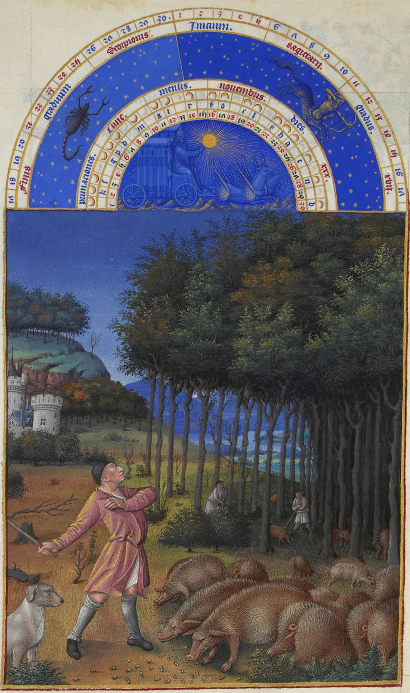
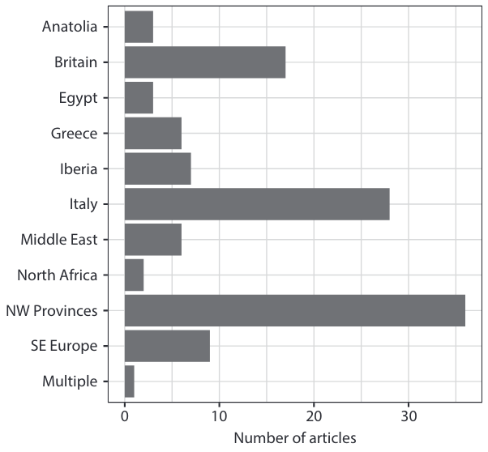
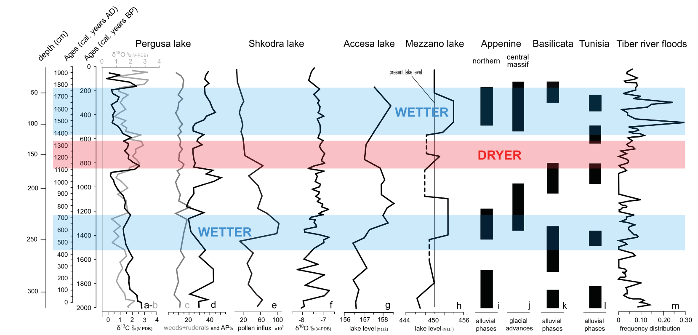

2 Literature Review
2.1 Introduction
This literature review aims to provide an overview of perspectives concerning the exploitation of the rural landscape in the Italian peninsula from the 1st century BCE to the 11th century CE. The review will examine the main debates surrounding the agrarian economy during the first millennium and highlight the gaps in the current discourse. One of the main concerns in the study of rural history is whether local economies should be seen as closed subsistence productions or as communities open to trade and exchange. In this context, recent lines of evidence such as climatic variations, archaeobotanical data and zooarchaeological sources have been used to shed light on this question. To this end, this review will explore the historical debates, but also highlight the significant contributions of environmental archaeology in understanding aspects related to subsistence, diet, climate, and crop selection models. In addition, I will briefly discuss the research framework of this dissertation, which is grounded in quantitative archaeology, with a particular focus on Bayesian inference.
2.2 The Agricultural Economy
This research places significant emphasis on the role of agricultural economy. In pre-modern societies, agriculture held a central position as it not only provided sustenance but also served as a primary source of taxation. The transition from early forms of hunter-gatherer economies to more controlled and centralized systems has been a subject of extensive debate among scholars. One compelling perspective on this transition is presented by James Scott (2017), who introduced the concept of “grain states”. These were systems that relied on regular harvests and the ability to store and tax grain, which served as a predictable and taxable form of income. Grains, in particular bread wheat and barley, exemplify these characteristics. They can be sown in the winter (although not necessarily) and harvested in early summer, requiring comparatively less intensive field management during their growth period. On the other hand, crops like legumes and fruits demand more intensive care, and the storage of fruits, for instance, poses challenges and is not suitable for long-distance transportation. Ancient Rome is an example of such “grain state”, as the empire heavily relied on cereals both for taxation purposes and to sustain its own population, especially during its peak demographic period. The ability to predictably tax and manage the production of grains played a crucial role in sustaining the empire’s vast territory, and agriculture, being the main sector of the economy at this time (Heinrich, 2017), held significant importance. The imperial period has been extensively studied and debated in relation to ancient Roman agricultural economy. In the following section, various economic models of the Roman agricultural system will be introduced. Traditionally, much of the focus has been on villa productions, with less attention given to smallholders. More recently, there has been an increase in interest in Roman peasants, and archaeological research has played a crucial role in shedding light on their lives, which are often overshadowed by documentary sources. Identifying Roman peasantry through archaeology is nevertheless not a straightforward task, as the traces are often less conspicuous compared to the monumental structures associated with elites or the well-preserved artifacts found in urban contexts. In this research, I will explore the use of archaeobotanical and zooarchaeological data to trace peasant strategies and trace their agricultural practices. While the factors influencing crop selection have been more explicitly discussed for the Republican and early imperial periods, the same level of insight is not as readily available for other periods within the scope of this research, particularly in Italy. However, there has been significant discussion among historians regarding changes in agricultural practices during the early medieval period, which will be examined. Overall, past archaeological literature has contributed to our understanding of rural dynamics, but the integration with different types of archaeological sources can improve this picture.
2.2.1 The Roman imperial phase
When examining agriculture in the late Roman Republic and Empire, there is a prevalent image of a dominus overseeing a vast estate, known as a villa, with enslaved individuals working in the fields. This image, influenced by classical texts such as Cato’s De agri cultura and Columella’s De re rustica, has led to the association of Roman agriculture with a quasi-capitalist framework. While scholars like Max Weber (2008) have acknowledged capitalist elements in the Roman economy, such as its inclination towards a market system, they have not fully recognized capitalism in Roman agriculture (Love, 1986). The absence of a labour market and the prevalence of slavery pose challenges to the direct application of a capitalist framework in understanding Roman agricultural practices. Moses Finley (1973) adopted a “primitivist” approach, aligning with some of Weber’s perspectives. Finley argued that Roman agriculture primarily operated under a pre-capitalist mode of production. According to Finley, the Roman agricultural system relied heavily on personal relationships, social status, patronage, and traditional forms of labour organization, rather than conforming to capitalist market dynamics. He contended that the Roman elite lacked the entrepreneurial mindset necessary for economic and technological growth (Haas and Tol, 2017, p. 16). This position was much criticised by the “modernists”, notably Peter Temin (2013, p. 114), who instead believed that ancient Rome had a labour market and questioned the notion that slavery indicated a non-market economy, especially considering the unique characteristics of ancient slavery in comparison to its modern counterpart. Temin (2013, p. 4) famously argued that “the economy of the early Roman Empire was primarily a market economy”. Modernist approaches conceptualise classical economy in a similar fashion to the modern one, with mechanisms of supply and demand. The existence of a market system is evident in the transportation of agricultural products across the peninsula and the broader Roman Empire. The movement of such goods indicates the presence of economic exchanges and trade networks. Furthermore, specific agricultural products became associated with particular regions or places, highlighting the localization of production. For instance, in the Roman suburbium, one could find pears from Signia, nuts from Praeneste, and pastio villatica (the production of luxury items such as small birds, honey, flowers for banquets, etc.) from Tarquinii (Marzano, 2008; Morley, 1996a, pp. 88–89).

Several adjustments to both models have been put forth more recently, with some scholars arguing that the primitivist/modernist dichotomy is too extreme and that more recent economical frameworks need to be considered, specifically New Institutional Economics (NIE) and Complexity Economics (CE) (Van Limbergen et al., 2022, p. 2). The first, NIE, considers the role of institutions and organizations in driving the economic behaviour of societies. In this approach, economic growth is only obtained through a market system (Scheidel et al., 2007). The lack of agency in NIE has been criticised by Wilson and Flohr (2016, p. 4), who believe that institutions are just starting points for economic strategies. In turn, CE is more dynamic, allowing agents to create and adapt strategies according to specific situations: economic systems are in fact “complex adaptive systems” (Van Limbergen et al., 2022, p. 6; Verboven, 2021). As noted by Kim Bowes (2021), alongside the on-going academic debate on which economic framework is best suited for Roman economy, the study of the ancient economy experienced a significant shift in the 1990s with some historians embracing a cliometric turn (Maddison, 2003, 2001; Piketty and Goldhammer, 2014). Scholars increasingly employed quantitative methods and sought to quantify various aspects of the Roman economy, including the measurement of gross domestic product (GDP), economic performance, inequality, and other key indicators. Some of these methods are collected in the work “Quantifying the Roman Economy: Methods and Problems” (Bowman and Wilson, 2009). While the integration of quantitative approaches in ancient economics is on the rise, it is important to acknowledge that these methods are not without their limitations. In this respect, Bowes (2021, pp. 8–10) raises critical points regarding certain efforts in the field. Specifically, she directs her criticism towards works that draw comparisons between the ancient economy and other premodern economies, such as 17th century England or 10th century China, using methods that have received little scrutiny. Bowes argues that instead of relying solely on such comparisons, it is more valuable to focus on obtaining granular data at the household level. While Bowes’ critique highlights the need for caution and a more nuanced approach in employing quantitative methods, it does not diminish the overall trend of increasing integration of these approaches in the study of ancient economies. Recent publications exemplify this integration by showcasing the use of quantitative methods in studying the Roman economy. For instance, the volume “Complexity Economics: Building a New Approach to Ancient Economic History” (Verboven, 2021) features case studies that employ network analysis and computational modelling to understand the complexities of the Roman economy. Similarly, the book “Simulating Roman Economies: Theories, Methods, and Computational Models” (Brughmans and Wilson, 2022) delves into the application of computational models to simulate and analyse Roman economic systems. These examples demonstrate the growing integration of quantitative approaches in the study of ancient economies, allowing researchers to explore the empirical dimensions of the Roman economy while also engaging with theoretical discussions. Despite their increasing integration into the economic debate, it is indeed true, as Bowes (2021, p. 27) pointed out, that these new major textbooks often prioritize large-scale questions and run the risk of creating deterministic narratives that view the past through teleological lenses of “rise” and “fall.” This limitation is perhaps inherent in computational modelling, which tends to focus on hypothesis testing and requires substantial data to construct narratives and contextualize the information historically. The need to make the reasoning behind causal inference more explicit when constructing models will be addressed in the subsequent discussion (§SIGNPOST HERE).
If the section began with an image depicting large estates worked by slaves in the Roman rural countryside (which we will revisit shortly), they were not the sole labour force involved. The post-war historical debate has placed increasing emphasis on the presence of other agents in the Roman rural landscape. In this context, the work of Karl Marx had for sure an impact in the popularity of bottom-up histories, as Eric Hobsbawm (1998, pp. 178–185) remarks. While slaves undoubtedly played a significant role especially in large-scale farming operations, agricultural activities encompassed a diverse range of individuals and groups. After all, traditional Roman texts consistently portray the image of a simple peasant working on a fundus to sustain his family. Free peasants involved in agricultural activities could take on different roles as either freeholders or tenants (coloni). Peter Garnsey, one of the historians who extensively studied peasants in the Classical age, mentions tenancy as “the most common method of production in the empire taken as a whole” (Garnsey, 1998, p. 94). In fact, peasants were not limited to working on small-scale agricultural plots. They could also be involved in renting and cultivating both large and small estates. In his writings, the Roman agronomist Columella (2010, pp. 81–84) expresses criticism towards farmers who rent extensive parcels of land and neglect their responsibilities by leaving their servants in charge. He also disapproves of farmers who choose to reside in the town rather than overseeing their lands directly. Roman tenancy agreements, which are primarily known through the preserved Egyptian contracts, displayed a remarkable degree of diversity. These agreements encompassed various structures, ranging from short-term to long-term leases, and the methods of rent payment varied as well. If monetary payment was customary, sharecropping could be an alternative option for tenants. Sharecropping involved a fixed payment in kind, which provided tenants with some protection against market fluctuations. Sharecropping can be understood as an arrangement where tenants contribute a portion of their agricultural produce to the landlord instead of paying rent in cash. This practice mitigated the risks associated with market volatility, as the tenant and landlord shared the uncertainties of agricultural production together (Erdkamp, 2005, pp. 26–29). In a letter from 107 CE in Pliny the Younger’s Epistulae (1962, p. 301), it is clear how sharecropping increased risk not only for the tenant but also for the landlord, but it also encouraged long-term profitability. The sharing of risks and rewards created a mutually beneficial relationship between the tenant and the landlord. Sharecropping was particularly well-suited for capital-intensive arable farming, as suggested by Pieter W. de Neeve (1990). This includes the cultivation of cash crops like olives and grapes, which necessitated substantial investments. In addition to slaves and tenants, there were other types of labourers in the Roman rural countryside, which are rarely discussed in ancient sources. These included wage-earners, known as mercenarii, and debt-bondsmen, known as obaerarii. Varro (1934, p. 225), in his De re rustica, is informative on this matter:
All agriculture is carried on by men — slaves, or freemen, or both; by freemen, when they till the ground themselves, as many poor people do with the help of their families; or hired hands (mercenarii), when the heavier farm operations, such as the vintage and the haying, are carried on by the hiring of freemen; and those whom our people called obaerarii and of whom there are still many in Asia, in Egypt, and in Illyricum. With regard to these in general this is my opinion: it is more profitable to work unwholesome lands with hired hands than with slaves; and even in wholesome places it is more profitable thus to carry out the heavier farm operations, such as storing the products of the vintage or harvest.
Among these workers, the role of wage labourers is of particular interest. According to scholars like Peter Garnsey (1998), the significance of slavery in rural production may have been overstated. Both Paul Erdkamp (2005, pp. 80–83) and Garnsey (1998, p. 108) suggest that wage labourers were primarily found on large estates, where they would supplement the work of slaves during peak agricultural periods such as grain harvest and vintage. Wage labourers might not have constituted a distinct social class. Instead, they could also have been individuals who owned or rented their own farms and engaged in wage labour to earn additional income (Garnsey, 1998, p. 145). K. D. White (1970) estimates that dedicating 100 out of the 250 working days available to cultivating the land is adequate for subsistence farming. As a result, subsistence farmers would have approximately three months of available time for engaging in paid work. If small-scale farmers were not primarily focused on surplus production, they had the potential to offer additional labour. However, it is the large estates or villas that emerge as the most significant surplus producers for the market. The villae rusticae, which are believed to have originated in Thyrrenian Central Italy, specifically in regions such as Latium, northern Campania, and southern Tuscany (Etruria), are described in particular by Varro and Columella (Marzano, 2007). Villas were characterized by their dual composition—a residential section (pars urbana) and a productive centre (pars rustica). The residential section was reserved for the landowner, while the latter served as the productive core of the villa, where slaves were dedicated to cultivating cash crops. Among these, grapes and olives held particular significance, as wine and olive oil could be transported over long distances. By the mid-1st c. CE, it is estimated that there were seventy-one grape cultivars (varieties) and fifteen olive varieties in cultivation (Marzano, 2022, p. 276). These crops were not only labour-intensive, requiring a significant workforce especially during peak seasons, but also demanded substantial initial investments. To support the production of wine and olive oil, cellar rooms (cellae vinariae or oleariae) needed to be constructed to store the produce in buried containers known as dolia defossa. Further high costs resulted from other necessary facilities, including presses, floors, vats (palmenti) and additional related structures and equipment. Additionally, the harvest also needed to be protected from pests, such as caterpillars, mice, and foxes (Dodd, 2022; Hollander, 2019, pp. 27–28). To appreciate the significance of such expenditure, one must take into account that the profitability of these investments frequently took several years to manifest: grapevines and olive trees typically reached their full productive capacity only after a decade of cultivation. Extensive research has been conducted on villas, resulting in a vast bibliography on the subject. What we can assert is that villas began to appear in the 2nd-1st century BCE as large estates that specialized in cultivating specific cash crops, particularly olives and grapes for the production of olive oil and wine. The owners of these villas rarely engaged directly in agricultural work. Instead, they entrusted the daily management of the estate to a vilicus who oversaw the day-to-day affairs of the villa (Marcone, 2004). The subject of “slave villas” (villa schiavistica) has occupied much of the ongoing debate surrounding Roman agrarian history, and it continues to generate significant interest. Notably, the first scientific Italian excavation of a Roman site was the excavation of a villa in Southern Tuscany known as Settefinestre. Andrea Carandini (1985), working within a Marxist framework, portrayed the villa as a plantation reminiscent of American colonial style, highlighting the significant role of slavery in the operation of these estates. The increased number of slaves following the Punic Wars (fought between 264 and 146 BCE) was a decisive factor in the expansion of villas, as it provided villa owners with a substantial labour force to work the lands. This was particularly significant considering the post-war decline in the population, which resulted in a decreased availability of citizens to engage in agricultural work due to their involvement in wars (Toynbee, 1965). Furthermore, the eastward expansion during the late Republic and early Empire had a notable impact on the availability of slaves for agricultural labour. Carandini (1981) suggested that these centuries mark a shift from Republican small-scale family-sized farms to profit-oriented large-estates. While it remains true that villas mainly employed a large amount of slaves in their production, a variety of free workers could have also been employed, especially when more workforce was required. When eventually Roman expansionism slowed down in the 2nd c. CE, the resulting crisis in the availability of slaves pushed landowners towards other forms of management (Pinchetti, 2021, p. 10). In this period, the number of tenancy contracts increased significantly, with coloni leasing rural plots for short or long-term occupancy solutions, already discussed above.
In the previous paragraph, we discussed the development of villae rusticae and their exploitation of cash crops. Cash crops, particularly grapes and olives, were highly indicated for their market value and long-distance transportability. The selection of crops on any given farm was influenced by various factors, including economic considerations. Understanding why crop selection is important economically involves analysing choices such as selecting cereals over arboriculture or the specific type of cereal to cultivate. Multiple cereals can be chosen, or only one, each with different nutritional values, yields, and adaptability to different climates and geographies. Factors such as climate, soil quality, water availability, and geographic location must also be considered for the choice of cereal crops. Furthermore, crops have varying shelf lives, which affect their storage and marketability. When deciding which crops to cultivate, farmers take into account market demand, production costs, storage capabilities, and processing requirements. They assess the profitability of different crops based on factors like yield, market price, and input costs. For instance, farmers may choose between cash crops that yield immediate income, like grapes and olives mentioned earlier, which require significant investments but offer potential long-term returns. On the other hand, cereals serve as staple food crops but may have lower market value and profit margins. Within the cereal category, farmers must consider specific grain types. Some crops, like naked wheats, are less durable and more susceptible to damage from bacteria, fungi, and other pests during storage. Conversely, hulled wheats provide better protection but require additional processing, which adds to the production costs. Numerous crop selection models have been proposed for the Roman age, and a comprehensive overview is provided in Frits Heinrich (2017). One of the earliest scholars to discuss crop selection in the Roman era, albeit in different terms, was the economist Naum Jasny. Jasny’s research on competition among grains in classical antiquity (1944; 1942) compared different cereal taxa based on productivity, performance, geological adaptability, and economic factors. Notably, Jasny argued for a transition from emmer wheat (Triticum dicoccum) to hard wheat (Triticum durum) during the Roman age, which was completed in Late Antiquity. According to Jasny, hard wheat provided better yields and was more suitable for bread baking. Emilio Sereni, historian and author of Storia del paesaggio agrario Italiano (1961), provided a model specifically for Italy. Sereni also observed the shift towards hard wheat, but his approach was less evolutionistic compared to Jasny. Sereni argued that hulled wheats were inferior to naked wheats, while Jasny believed that the choice between naked and hulled wheats depended on specific circumstances. In his work, Sereni emphasized the strong correlation between crop selection and economic factors—during periods of economic growth, specialization occurred, whereas periods of depression led to greater crop diversity. In line with this perspective, Sereni argued that the number of cereal crops was higher in Republican Rome compared to the Imperial period, only to experience growth once again in Late Antiquity. This perspective contradicted Jasny’s evolutionary viewpoint. In the 1980s, another significant contribution to crop selection models is found in the works of M.S. Spurr (1986, 1983). Spurr responded to the perspectives put forth by Jasny and Sereni by arguing against the significance of climatic and geological factors in crop selection, emphasizing the overriding importance of economic considerations for peasants. According to Spurr’s model, specialization would be the logical outcome of a thriving agricultural economy. However, this was not the case in Roman agriculture which was characterized by high diversification and by the use of ‘minor’ crops including millets. Robert Sallares (1991) also identified a transition from hulled to naked wheats in classical Greece, and argued that it was an unintentional process of crop improvement that originated in Neolithic times. Sallares challenged Jasny’s perspective by suggesting that factors beyond cereal suitability criteria, such as demographic pressure, played a more significant role in the crop selection process. Furthermore, recent research conducted by Daphne Lentjes (2013), focusing on several sites in southeast Italy occupied during the 1st millennium BCE, revealed that while naked wheats became slightly more prevalent, other cereal taxa remained present without notable disappearance. Heinrich’s (2017) perspective on crop selection in the Roman era takes a more cautious approach, emphasizing the importance of precise archaeobotanical quantifications that go beyond simple presence/absence analyses. Heinrich highlights that crop selection was highly situational and influenced by factors such as market accessibility and taxation exemptions, particularly in the case of Roman Italy. The absence of taxation for Italian farmers provided them with greater freedom in choosing which crops to cultivate.
The scope of agricultural decision-making was not only limited to plants, but included also animals. The historian Geoffrey Kron (2004), mostly basing on textual and zooarchaeological evidence, argued that convertible husbandry was a common practice in Roman times. Further hypotheses for this practice, based on archaeological evidence, can be found in The Roman Peasant Project (Bowes, 2020), a series of excavations conducted between 2009 and 2014 in Southern Tuscany that specifically targeted peasant settlements. Convertible husbandry, also known as ley farming, involved a strategic allocation of arable land for both crop cultivation and pasture. Kron maintains that by implementing ley agriculture, peasants could optimize the productivity of their farms. The process of ley farming followed a productive regenerating cycle. Initially, certain plots of the farm are intensively cultivated with crops, such as cereals. Subsequently, these plots were sown with legumes, which served as nitrogen-fixing plants (Liu et al., 2011). Although ancient agronomists may not have fully understood the scientific basis behind this practice, they were aware of the positive effects of legumes on soil fertility, as writings by Cato and Columella suggest (Hollander, 2019, p. 30). Support for the benefits of legumes can also be found in the works of Theophrastus (1980, p. 199), a Greek botanist who noted in his Historia Plantarum (written around the fourth to third century BCE) that beans seemed to have a fertilizing effect:
Beans, as was said, are in other ways not a burdensome crop to the ground, they even seem to manure it, because the plant is of loose growth and rots easily.
Following the cultivation of legumes, the cultivated plots were set aside and utilized as pastures, known as leys, for a specific period of time. This rotational approach ensured that there was always a designated area available for livestock grazing. By allowing the land to rest and serve as pasture, farmers not only provided a source of food for their animals but also allowed for the regeneration of the soil. As with crops, farmers took a number of factors into account when selecting livestock, including economic considerations, resource availability and market demand. They assessed the potential profitability and suitability of different livestock species based on their ability to yield meat, dairy, and other secondary products (e.g. wool, fat, etc.). While climatic conditions had a relatively smaller impact on animal selection compared to crop selection, it is true that certain environments are more conducive to raising specific species. For example, pigs were a versatile choice that could be raised almost anywhere. However, raising them in forested areas was economically advantageous due to the availability of acorns and other nuts, which served as a natural and abundant food source for pigs (Hollander, 2019, p. 34). This utilization of local resources optimized the efficiency of livestock production and minimized the need for external inputs. The selection of animals for specific purposes, such as draught animals for agricultural work or specialized breeds for specific products like wool or milk, further exemplified the complexity of the selection process. In Roman times, cattle were the most common working animals, primarily utilized for traction in agricultural operations. Their main role was to provide the power necessary for plowing, pulling carts, and other tasks requiring heavy labour. However, cattle also served other purposes, including meat production, leather, and the utilization of their bones for various crafts and tools. The cattle husbandry sector experienced growth and specialization during this period, as evidenced by the significant increase in the average height of cattle during the Imperial age. Research by Jacopo De Grossi Mazzorin and Claudia Minniti (2022, pp. 70–71) provides insights into the changing characteristics of cattle in Rome. The study examined the average height at the withers, a key measurement in determining the size of quadrupeds. In the Republican phase, the average height was reported as 115.7 (N=9, SD=11.9), while during the Imperial phase, it increased to 129.4 (N=18, SD=6.2). This increase in height indicates a deliberate focus on breeding larger and stronger cattle, reflecting the demand for more efficient and powerful working animals. Certain regions of the peninsula specialized in cattle breeding. Areas such as Venosa, Sabina (north of Rome), southern Etruria, the Alps, and pre-Alps were known for their specialized cattle husbandry practices (De Grossi Mazzorin and Minniti, 2022, p. 68). While larger estates had the means to sustain multiple working animals, small-scale peasants likely had to manage with just one. Alternatively, they might have resorted to renting or borrowing animals from neighbouring farmers on an as-needed basis. Farmers had to weigh the benefits and costs of different animal types to ensure optimal utilization of resources and maximize their economic returns. The interaction between crop selection and animal farming was intricately connected, as the availability and suitability of certain crops influenced the choice of livestock and vice versa. For example, the cultivation of specific crops like fodder or forage crops played a crucial role in providing feed for livestock and, as argued above, the by-products of animal farming, such as manure, were valuable resources for crop cultivation, contributing to the overall agricultural productivity. In addition to these considerations, various factors influenced the choice of animals to raise, similar to the selection process for plants. For example, pig meat was highly valued and likely in high demand during periods of population density. The Roman suburbium, with its proximity to the city of Rome, likely played a significant role in pig farming, as evidenced by numerous excavations reporting pigs as the most prevalent faunal remains. Specifically, the presence of certain cuts of pig meat suggests patterns of consumption (De Grossi Mazzorin and Minniti, 2022).
2.2.2 Late Roman Phase
Tracing the agrarian history of the late Roman period is a challenging task, primarily due to the inner limitations of ancient sources that predominantly inform us on the lives of the elite. The representation of the medium and small class of peasants in these sources is limited, hindering a comprehensive understanding of their experiences. Much of the available evidence often pertains to fiscal matters, leading historians to concentrate on topics such as slavery, wage labor, tenancy contracts, and the fate of what used to be the core of Roman large-scale agricultural production: the rural villa. Several studies have focused on explaining the transformations that took place in villas during the period from the 3rd to the 5th century. Beth Munro (2012) identified three distinct phases in this phenomenon. The first phase, observed in the 3rd century, reveals an overall decline in the number of villas. In the subsequent phase, occurring in the 4th century, the surviving villas underwent a process of monumentalisation. This involved the enhancement and embellishment of existing structures, perhaps as a response to socio-political changes or the desire for ostentatious displays of wealth and status. The final phase, extending into the 5th and 6th centuries, witnessed a gradual abandonment of villas. This phase is characterized by a progressive disintegration of the once thriving villa culture, as various factors – which will be examined shortly – potentially contributed to the declining significance of villas during this period.
The focus on villas in the study of late empire agrarian history is primarily attributed to their prominent role as cash crop producers during the late Republic and early imperial phase, as described in the previous section. The significant contribution of villas to agricultural production during this period has led many scholars to speculate that the decline in the number of villas was linked to a decline in overall agricultural output. Support for this hypothesis can be found in ceramic findings, which indicate an increase in the prevalence of foreign imports. While wine exports may have experienced a decline in the late 1st and early 2nd centuries, the production of wine, a commodity closely associated with rural villas, continued to hold significance in Italy. However, there was a noticeable shift towards more localized wine production, as documented by Clementina Panella (1989) and André Tchernia (1986). The question of whether a crisis occurred during the late empire period is a subject of debate among scholars. Prominent archaeologists such as Carandini (1989, p. 130) argue for the occurrence of a crisis and destructuration during the Antonine age:
The end of the second century brought to an end for Italy the chapter that had opened with the end of the Second Punic War and that had made the peninsula for the first time the economic centre of the world to the west of Mesopotamia. Some believe that this sad fate is limited to coastal Etruria. Let us leave this illusion to those who have no direct experience of the archaeological and agricultural landscapes of the other regions of central and southern Italy. It is possible that late antiquity, too, had its rationalities, beauties and riches in Italy, but as yet no one can tell us exactly where. So far are only clear the signs of the ruin and decay of the extraordinary pomarium that had been the Italy of villas.1
Those who argue for a crisis point to archaeological evidence such as the reorganization of villas into smaller quarters, poor repairs, and the functional repurposing of elegant rooms as signs of crisis in these settlements (Marzano, 2007, p. 199). On the other hand, Garnsey (2014. pp.86-87) contends that there is insufficient evidence to support the notion of a crisis in wine production or agriculture during the 2nd and early 3rd centuries CE. Taking an intermediate stance, Domenico Vera (2020) proposes that the crisis may have been exaggerated in historical literature and should be viewed more as a transformation. He challenges the simplistic dichotomy of decline versus prosperity and suggests that while certain localized areas, such as Thyrrenian Italy, experienced a crisis, other regions demonstrated signs of productive growth in the 2nd and 3rd centuries, reaching their peak during the Constantinian period and beyond. Among these, northern Apulia, inland Sannio, and coastal Lucania. Vera’s viewpoint aligns in this respect with Garnsey’s, as the latter believes that the decline in villas was not ubiquitous or did not occur simultaneously in all regions. In southern Etruria the number of villas diminished during the Antonine period, but they were still productive in other areas in the 3rd century—in Latium (around Rome), in the ager Falernus, and in southern Italy (Garnsey, 2014, p. 87; Lafon, 1994, p. 221; Vera, 2020, p. 221). Vera also challenges the notion that a decline in viniculture automatically implies a general agricultural decline. He suggests that the changes observed may be attributed to a shift in production rather than a decline in overall agricultural output. Cereal and animal farming, for instance, do not show signs of decay (Corbier, 1991; Spurr, 1986). The widespread abandonment of villas during this period can perhaps be understood in a different context. First, the progressive and widespread concentration of properties in the hands of senatorial families or of the imperial fiscus must have played a role in this process. Annalisa Marzano (2007, p. 215) showed how some coastal and maritime villas during the mid-empire changed ownership and were transferred to the fiscus through testamentary legacies. These villas were probably not used anymore as a residential retreat since imperial slaves or freedmen were appointed as overseer of these properties. Second, the concentration and reorganization of properties often lacked geographical continuity, posing challenges to their management. Towards the end of the 3rd century, forms of indirect tenancy increased, where plots of land were rented out to large tenants to large (conductores) and small tenants (coloni). Long-term rental contracts, known as emphytheusis, also became more common, continuing into the 4th century, and primarily targeted imperial properties that had become too extensive to be effectively managed, rather than lands that had declined due to neglect (Whittaker and Garnsey, 1997, p. 283). Vera (2020, p. 330) considers this period as a turning point in the Italian agricultural landscape. Villas, during this time, transformed into centres for the management of scattered plots of land and expanded their storage capacity for agricultural produce. For example, the villa in via Gabinia in Rome underwent modifications during the late imperial phase, including the addition of a long building identified as a storing facility (Marzano, 2007, p. 213). The concentration of properties during the late antique period did not always result in centralisation. Instead, a prominent agrarian structure that emerged during this time was the massa fundorum. It represents an agglomeration of properties with varying types, which may or may not have productive links between them (Vera, 1999). The reorganization of the rural landscape during this period also led to changes in the hierarchy of settlement patterns, resulting in a growing number of pagi and vici. These settlements were inhabited by peasants who worked the lands of the villas’ fundi or coloni. The number of vici particularly increased in southern Italy, and many of these emerging vici were connected to territories previously occupied by villas. In some instances, they were even established in the locations of abandoned villas from the 2nd to 3rd centuries, with their maximum expansion occurring in the 4th and 5th centuries.
The transition to the colonate system may also have been fostered by the slave crisis of the 2nd and 3rd centuries, which was indirectly caused by the reduction and slowdown of Roman military expansionism (Oliva, 1962). Karl Marx, a prominent proponent of what Kyle Harper (2013, p. 167) calls the “conquest thesis,” argued for a larger availability of slaves in the later Republic due to expansionist wars. This idea was already proposed by David Hume (1987) earlier, in his essay ‘On the Populousness of Ancient Nations’. The concept of increased slave labor driven by the demand for specific commodities, particularly wine, has been resilient in historiography and was embraced by neo-Marxists and modernist scholars such as Carandini (Harper, 2013, p. 169). The slave crisis of the 2nd and 3rd centuries cannot be solely attributed to the halt of Roman expansionism. The slave mode of production was already experiencing an internal crisis due to the inherent contradictions of the system, leading to rising supervising costs (Morley, 1996b). The impact of the slave crisis varied across different regions, with a more pronounced effect in areas where slave-run villas were prevalent, such as Thyrrenian Italy (Marzano, 2007). In contrast, northern Italy had a higher concentration of small and medium-sized farms and fewer slave-run villas (Ortalli, 1996). Furthermore, it should be also considered that not all villas exclusively relied on slave labor, as discussed earlier. Many estates employed a combination of slave labor, hired seasonal workers, and tenants for their management (Marzano, 2007, p. 229; Rathbone, 1981). The idea of a transition from slavery to a quasi-feudal mode of production has faced criticism from Harper (2013), who argues that Rome remained a slave society in the 4th century and dismisses Vera’s discussion of “slave tenancy” or “slave families” as an intermediate step towards colonate (and the medieval feudalism). He argues that these ideas are dependent on the Marxist ‘conquest thesis’ and fail to consider mechanisms of supply and demand and, more importantly, the labour market. According to the historian, the colonate is in fact a “historiographical myth” (Harper, 2013, p. 169). The primary reason for the eventual decline of slavery that he indicates is instead the decrease in demand: “as the Roman imperial system unraveled, slavery became less prominent in precisely the two sectors that made Roman slavery exceptional: sub-elite households and agricultural estates” (Harper, 2011, p. 66). Unfortunately, this dissertation is unable to contribute directly to the ongoing debate surrounding the slave crisis and the transition to the colonate system, as proposing causal inferences using archaeological environmental analyses is challenging. However, it was essential to provide a background on the situation in the Italian countryside during this period, considering that much historiography has focused on this specific debate rather than exploring other topics (more related to this work) such as crop selection. What is important to note here is that if there was an economic depression during this period, it was not solely caused by the slave crisis. As highlighted by Chris Wickham (1984), the state coffers were already suffering from tax evasion by wealthy landowners. This factor, combined with other economic dynamics and factors at play, likely contributed to the overall economic conditions of the time.
The second phase in the transformation of villas, as identified by Munro (2012), is the monumentalisation phase, which occurred around the 4th century. During this period, many surviving villas underwent radical architectural and decorative transformations, particularly the residential ones. Simultaneously, there was a trend of abandonment for other villas. Numerous monumentalised villas were strategically located in fertile lands with panoramic views, often in proximity to main communication systems. Examples of such villas include Casteldebole (Bologna), Faragola (Apulia), Villa del Casale (Piazza Armerina, Sicily), Villa di Massenzio (on the via Appia, Lazio, an imperial residential villa monumentalised in the 4th century), Desenzano sul Garda (Lombardy), and Masseria Ciccotti (Basilicata) (Sfameni, 2006, p. 28). In some cases, the monumentalisation involved the restructuring of previously declining or abandoned villas from the 2nd and 3rd centuries. For example, the new 4th-5th century villa at S. Giovanni di Ruoti was installed on a previously abandoned building (Buck and Small, 1994), and the same occurred with several farmsteads and minor villas in northern Apulia, where the productive areas were enhanced during the 4th-5th centuries (Posta Crusta, La Minoia, Avicenna, and more) (Vera, 1995, p. 344). Giuliano Volpe (1996) explains the simultaneous rarefaction and growth of villas as a deliberate choice, with certain villas becoming the directional centres of land properties. This viewpoint is also shared by Vera (1995, p. 194), who believes that this process is part of a general transformation of the agrarian system. The monumentalisation of villas has been attributed to the increasing preference of elite members to reside in the countryside rather than in the city (Sfameni, 2006, p. 22). The emergence of large villas, referred to as praetoria, between the 4th and 5th centuries in the Western part of the Roman Empire, has been linked to forms of self-representation by the elite (Lewit, 2003). These villas indeed do not exhibit an organic relationship with the pars rustica. Further evidence of the aristocrats’ increased urge for self-representation can be found in the letters of two writers of this period, Simmachus and Sidonius Apollinaris, which show the author’s preoccupation with issues of power and reputation (Grey, 2011, pp. 9–10). The available documentation from this period has sparked debates among historians regarding the role of slavery in rural villas, part of which has already been discussed above. Vera (2012, p. 112) is convinced that slavery was not a major component in Italian agricultural production at this point. Instead, these villas likely functioned as coordinating and stocking centres. For example, Villa del Casale in Sicily featured a large horreum frumentarium found near the entrance of the villa (Pensabene, 2010). The reorganisation of the countryside with sparser villas and the addition of stocking structures also suggests a shift in production from cash crops to cereal farming, according to Vera (Vera, 2020, p. 231). This transition is evident in locations such as Luni, where vineyards were abandoned on the hills while cereal farming persisted in the plains (Delano Smith et al., 1986). Similarly, in Farfa, wine and olive fields appear to have been converted to cereal production (Leggio and Moreland, 1986).
In the fifth century, the residential villa model (praetoria) faced a crisis, albeit with varying modalities and timing in different regions (Sfameni, 2012). One notable characteristic of these villas is the presence of re-use and recycling phases, indicating a continuity of occupation that extends into the early medieval period (Munro, 2012, p. 353). The presence of squatters in these abandoned villas has been hypothesized, although this notion is highly debated in more recent literature (Castrorao Barba, 2020; Munro, 2020, 2012). A revising process of the traditional paradigm of decline – a decline that Bryan Ward-Perkins (2006, pp. 87–169) could see so clearly in the material and housing culture of Late Antiquity – has been promoted by Tamara Lewit (2005; 2004, pp. 256–260; 2003) who described the transformation of the villas as a result of the different cultural and ideological values of the élite after their conversion to the Christian religion. Additionally, Volpe et al. (2009) suggest that the structural changes observed in former Roman villas are not solely a result of different values but are influenced by various factors, including the Gothic War, the crisis of central power in Rome, and other elements contributing to the aristocracies’ impoverishment. However, it is important to keep in mind an important datum: the frequency of villa re-use is relatively low compared to the number of abandoned settlements. Angelo Castrorao Barba (2014) [p.264] demonstrates that only 26% of Italian villas were reused out of a total of 1,850 case studies. Considering the extensive debate surrounding the structural changes in villas during this period, it is important to mention that this dissertation does not delve into that specific topic. For more comprehensive insights, readers are encouraged to refer to seminal works by Brogiolo (1996a), Brogiolo et al. (2005), Castrorao Barba (2020), Christie (2004), Dodd (2019), and Ripoll and Arce (2000). Importantly, research has shown how the chronology of the abandonment of Italian villas is not homogeneous. While Thyrrenian Italy seems to be the first to be in decadence, where territories are abandoned along with a demographic crisis (Vera, 2020, p. 330), in Southern Italy, for instance, villas seem to be in use at least until the 6th – 7th century. The reasons for this longer prosperity are manifold and complex. Carla Sfameni (2006, p. 167) asserts that the emergence of large residential buildings in the south in the 4th century has to indicate a positive economic trend already in the 3rd century. She criticizes the pre-1950s historiography that saw an agricultural and economic decline of southern Italy and Sicily during the imperial age, which worsened in the late imperial period. Later work by F. De Robertis (1972, 1951) and by Lelia Cracco Ruggini (1995) reevaluated southern economy suggesting opposite trends, especially for cereal farming in Apulia. Much of this positive growth has been attributed to the diversion of annona coming from Egypt to the new capital, Constantinople in the early fourth century. At this time, Italy needed a new productive centre for cereal distributions. Northern Africa, Sicily, and Apulia were obvious choices, given the large amount of available plains, and started exporting large quantities of grain (Volpe, 1996). Vera (2020, p. 330) hypothesized that the state did not promote specialisms in certain areas, rather it required produce from where there was already an abundance. Northern Apulia, notably the endpoint of a transhumance circuit, also became a core centre of wool production. Lucania et Bruttii, hosting a wide forested area, became large producers of pig. Calabria and Sicily were producing vina fiscalia (wine destined to the free imperial distributions to citizens). The destination of Apulian grain is debated, as probably until the 5th century the annona on southern Italy was only related to wine and pork production, while the grain from Apulia must have been destined to the Danube military region or Cisalpina, areas that are easy to reach on the Adriatic maritime route. Whatever the destination, this southern prolonged prosperity opened up the doors for senatorial investments. The area was more secure, a central place in the Mediterranean, close to infrastructures and Rome itself, not to mention the fact that investing in agricultural produce (especially cereals) was a good strategy in times of monetary inflation (Sfameni, 2006, pp. 168–169).
Late antique historians have historically focused less on the topic of peasant societies, with the scholarly debate primarily centered around slaves and coloni, as mentioned earlier. The literary sources available from this period often present images of the elite, providing limited insights into the lives of small-scale peasants. At present, the most valuable source of information regarding the experiences of peasants in late antiquity can be found in the papyrological evidence from Egypt. These documents, such as petitions and legal records, offer glimpses into the lives of peasants, albeit with potential biases and limitations in terms of representativeness. In particular, the nature of these records can skew our perspective in favor of interpreting peasants in subaltern positions, as they often highlight conflicts, disputes, and struggles (Grey, 2011, pp. 4–7). One notable historiographical work that specifically examines the late Roman peasantry is Cam Grey (2011)‘s “Constructing Communities in the Late Roman Countryside.” The book explores the concept of “small politics,” emphasizing the networks of mutual support and social dynamics within peasant societies that are often overlooked in fiscal documents. Grey’s research highlights the agency of peasants, as they adeptly navigate and negotiate against aristocratic claims, particularly in the western regions. While the book primarily focuses on the social and political aspects of peasant life, it does not delve into farming strategies. Instead, it centres on legal disputes and litigations to discuss the intricate dynamics within these communities. Archaeological projects that directly target peasant and non-elite pathways, as was the case in ’The Roman Peasant Project’ (Bowes, 2020), are still missing in late antique archaeology. As a result, explicit crop selection models specific to this period have not been extensively developed. Nonetheless, scholars acknowledge a general shift from cash crops to cereal farming during this era. However, the precise pathways, timing, and spatial patterns of this agricultural transition remain unclear. Additionally, there is a lack of comprehensive, peninsula-wide perspectives on stock raising during the late antique period. While some regional studies, particularly focused on northern Apulia (Buglione et al., 2016; Buglione et al., 2015; Volpe et al., 2012; Volpe, 1996), provide insights into specific areas, there is a dearth of comprehensive synthesis works that encompass the entirety of the late Roman period.
2.2.3 The Early Medieval phase and the 11th century
If late antique historians have focused on questions of slavery, tenancy, and landownership, two broad conflicting opinions have dominated the post-1950 discourse on the post-classical landscape. The first stresses continuities with the former Roman and late Roman structures and economic system, and the other emphasizes dramatic rupture from said systems. Pierre Toubert (1973) was among the first to argue for continuities in settlement patterns until the 10th-11th century CE, when sources begin to describe new types of fortified settlements called castelli or castra. Toubert (1973, pp. 321–338) used textual sources to outline the evolution from ‘dispersed households’ of the 6th-7th century CE (casalia), to 9th century CE manors (curtes), culminating in 10th-11th century CE castles (castelli). The opinion that castles originated from curtes is also shared by the historian Vito Fumagalli (1980, p. 318), who in turn believes that manors developed especially in Northern Italy in the Carolingian period. After centuries of alleged uncultivated standstill, the incastellamento (the process of creation of castles) made an agricultural revival possible, with new lands beginning to be cultivated around castles (Toubert, 1973, pp. 157–198). The scholarly focus on continuity vis-à-vis rupture also intersected with the study of the economic history in this period. Henri Pirenne ([1939] 2008) provided a long-lasting contribution to this matter in his work “Mohammed and Charlemagne”, which looked at documentary sources (primarily related to traders) and numismatic evidence. Pirenne argued against the traditional view on the end of Classical civilization, which overemphasizes the impact of 4th-6th century CE Germanic migrating tribes. Pirenne ([1939] 2008, pp. 54–70) claimed that such tribes could not have had a fundamental impact on Roman-style institutions and trading connections, extending the life of the Classical world up to the 7th century CE. He argued that life on the countryside and systems of agriculture remained the same. In this model, even the great Roman estates survived (Pirenne, [1939] 2008, pp. 75–76). Indeed, the literary sources point us to a continuity not only in assets in some cases, but also in the attitudes held by the ruling class. An example of a particularly well-known landowner in the records of the age of Theodoric, Ostrogoth king, is Theodad, his nephew. Theodad owned an extensive massa fundorum which was concentrated in Tuscia. The administration of his estates was carried out through the use of actores who were responsible for collecting rents and delivering them to him. This method of administration, as well as Procopius’ somewhat hostile portrayal of Theodad, suggests a continuation of the patterns observed within the senatorial class of the late Roman period (Vera, 2020, p. 208). The traditional view of the postclassical countryside as a landscape destroyed by continuous instabilities and warfare also continued to be challenged by recent scholarship. Arnold H. M. Jones (1964, p. 25) wrote that “the destruction caused by continued civil wars and barbarian invasions must have been immense. Cities were sacked and burned, crops destroyed, cattle driven off, and the population carried away into slavery.” However, as Tamara Lewit (2004, p. 41) points out, only a few literary sources mention destruction to agriculture in this period. Cities were likely the primary target of such violent acts. As was anticipated in the previous section, archaeologists had a different perspective on the transitional landscape and economy at the time of the collapsing villa system and Germanic migrations. The archaeological discourse emphasises that textual sources can include bias and that scholars should give more consideration to material evidence such as ceramics, settlement patterns, and architecture. For example, Bryan Ward-Perkins (2006) recognised the decline of living standards during the late Antique period through the abundance of coarse pottery, wooden houses, and the disappearance of coinage for everyday use. Chris Wickham (2005, pp. 730–735) also reports a “ceramic breakdown” and deterioration of exchange systems between the 6th and late 9th century CE, when standardised pottery types mostly disappear and only local productions survive (Brogiolo, 1996b; Giordani, 1994). Finally, Richard Hodges and David Whitehouse (1983, pp. 36–48) determined, using survey data, a decline in the number of datable sites throughout Italy and a demographic decrease between the beginning of the 5th and the end of the 6th century CE. Fabio Giovannini (2010, pp. 218–219) also argues for a demographic stagnation from the 6th century until the 12th-13th century, and reports no prolonged famines or epidemics from the 8th to the 14th century. During this period, the demographic pressure was low, particularly in rural areas. Various factors contributed to this decline. While traumatic events may have had an immediate impact on population numbers, their long-term effects are usually limited. Other factors, such as an extended period of breastfeeding for children (from 4-8 months in the Roman era to up to 2 years in the medieval period), likely influenced the number of children in rural communities. In the Roman era, it is estimated that rural families had an average of six children, whereas from the 4th to the 6th century, the average must have been around three (Ibid. 230). Despite the decrease in population, osteological analyses indicate an improvement in nutrition and diet, with fewer skeletons displaying pathologies related to these factors. Giovannini (2010) attributes this improvement to a more diverse subsistence diet compared to the Roman era. This aspect will be further explored later in this chapter. While Giovannini suggests stagnation until the 12th century, Di Muro (2020, pp. 13–14) argues for an increase in population around the time of Liutprand, the king of the Lombards, in the 8th century, following the plagues and conflicts that occurred during the Justinian era. In a status quaestionis on the discipline of Medieval Archaeology in Italy, Marco Valenti (2014, p. 123) stated that the debate was monopolized in the 1990s by the “Tuscan model” because of the larger availability of archaeological data from this region. The “Tuscan model” was put forth by archaeologists Riccardo Francovich and Hodges (2003, p. 21), who argued that Toubert’s textual model was flawed because a break had already occurred in the 6th-7th century CE, when peasant communities moved to hilltop locations and created fenced farms. The model posits that the choice of hilltops was probably dictated by necessity because after the Greek-Gothic war, unconstrained farmers decided to cluster for protection. Only later, under Carolingian rule, did villages develop hierarchies and become curtes. Lastly, the phenomenon of incastellamento in the 10th-11th century CE, merged manorial functions with landscape management (Valenti, 2014, pp. 130–131). The “Tuscan Model” clashed with the idea (popularised by Marc Bloch (1966, pp. 1–5)) that Roman villas were at the root of modern villages (Cheyette, 2008, p. 129). Following the intensification of excavations in the late 1990s, the “Tuscan model” received criticism, especially by Gian Pietro Brogiolo, who considered the case of Tuscany as an anomaly, because in Tuscany aristocratic weakness facilitated the creation of hilltop villages by free-moving farmers (Valenti, 2014, pp. 131–135). In 2004, there was a confrontation between the two sides of this debate when Francovich, Brogiolo and Valenti held an unpublished conference in Poggibonsi titled “Scavi fortunati e invisibilità archeologica” (Insegnamento di Archeologia Medievale e dell’Alto Medioevo, 2004). The title was chosen polemically after Brogiolo defined the excavations in Tuscany as circumstantially “lucky” because the structured network of Tuscan settlements must have complemented centres of power. Francovich opened the heated discussion by stating that Toubert’s continuity model (still supported by Brogiolo and other scholars) was merely based upon documentary evidence from about eight castles dated around the 10th century CE. According to Francovich, a small piece of land in Tuscany could provide better information than the entire work of Toubert (Valenti, 2014, pp. 132–136; 2009, pp. 40–42). Recently, the picture seems clearer because of historical and archaeological comparative work in the Italian peninsula. It now seems that the role of monastic foundations in the control of the countryside is undeniable because these institutions were more open to economic exchanges and agricultural exploitation than other aristocratic landowners, who were more interested in a military control of the landscape. Monasteries were often connected to a vast network of curtes, which were large tracts of land divided into two parts: the dominicum and the pars massaricia. The dominicum referred to the administrative and residential area of the estate, while the pars massaricia designated the portion dedicated to free or semi-free peasants. The origin of the manorial system of curtes has been a subject of debate among scholars. Some argue for continuities with the Roman villa-system (Francovich and Hodges, 2003), while others, as mentioned earlier, propose a significant shift in landownership patterns. However, a detailed discussion of this topic is beyond the scope of this chapter. What is important to note is that during the Lombard period, both the southern and northern duchies (although the sources richest in information are from Tuscany) provide examples of large manors already featuring a division between dominicum and pars massaricia. The figures for the average size of such estates remain uncertain, although a curtis could be valued at up to 8,000 solidi, as seen in the case of the 8th century estate of Alfiano sull’Oglio (Brescia). Nonetheless, most historians agree that curtes became more structured and widespread during the Frankish era. Wickham (2009) supports this idea, arguing that Lombard possessores were economically weaker compared to their Frankish counterparts. In contrast, Di Muro (2020) points out that this view may be biased— if most of the Lombard curtes reported in the documentary sources were private, the Carolingian estates studied so far mostly belonged to the royal fiscus. Wickham’s perspective notwithstanding, there are other historians, such as Bruno Andreolli and Massimo Montanari (1985), who highlight how corvées (unpaid labour obligations) fully developed during the Frankish period. Indeed, the demands made by landlords on peasants during the Lombard age were much more vague and general. In their view, corvées serve as indicators of a stronger control exerted by landlords over the manor. Towards the end of the Lombard era, we find references to the operae (labour) that free peasants had to perform for their landlords, as seen in the case of Totone di Campione (Gasparri and La Rocca, 2005). Although rare, there are instances of Lombard peasant obligations, which are less likely to be recorded since much of the information we have on Carolingian curtes comes from polyptychs. Polyptychs are documents that describe the lands and possessions of a landlord, which were not used during the Lombard age (Di Muro, 2020, p. 24). The role of monastic foundations in the network of curtes becomes evident when examining examples from the southern Lombard duchy of Benevento. One notable complex is Santa Sofia di Benevento, established around 760 CE by Duke Arechi II. In 774 CE, the duke bestowed upon the coenobium numerous lands and productive activities, including the saltpans of Salpi, a wood collection forest in Ascoli Satriano, a chalk mine in Nurano, various animal farms, and more (Martin, 2000). Among the properties donated to Santa Sofia was the former Roman villa of Faragola (Apulia), which underwent reorganization in the mid-7th century to enhance production and optimize spatial arrangement, particularly in handling farm produce (Volpe et al., 2009). Situated on the road to Benevento, it is likely that some of its goods were destined for that city. In 2001, Jean-Pierre Devroy (2001, p. 97) hypothesized that between the 5th and 11th century CE, ninety percent of the Italian population was living in a subsistence economy in the countryside. In general, though, the topic of rural economy is sparse in historical and archaeological literature. As Fredric Cheyette (2008, pp. 127–129) noted, only one volume in the series titled “The transformation of the Roman world” (Barceló and Sigaut, 2004) is devoted to the rural economy. The neglect of rurality by historians and archaeologists is partially to be ascribed to a “primitivism approach”2 (Castillo, 2014, p. 2), which is still significant in southern European academia. This approach argues for the return to a simpler form of economy and that this simplification is what brought on other changes in the early medieval social structure. Wickham (2005, p. 534), in talking about peasant autonomy, made an interesting point about agricultural production in the framework of the “Tuscan model”. The author claimed that after the 5th century CE, peasants did indeed operate in small circles of subsistence economy, but they had acquired more autonomy and responsibilities in farming production than in Roman times:
In a pattern of this kind, landlords are largely cut out of the productive process, for peasants make their own choices about agricultural planning and its rhythms. Almost all that changes is the type of rent, as well (of course) as its weight. In the early Middle Ages, most rents from peasants were in kind, and reflected the range of agricultural products available on any given tenant plot: the simplest type of rent structure, one that does not require any wider economic relationships to work (Wickham, 2002, p. 129).
If we exclude rents, peasants were liberated of former farming priorities, such as generating a surplus for taxation, and thus they did not have to meet external demands any longer. To provide context for this statement, it is useful to outline these former farming priorities. During the Late Roman Empire, between the rule of Septimius Severus and Diocletian, most of the Roman soldier salary (stipendium) was converted into wheat provisions. The state secured this distribution of grain to the soldiers (annona militaris) by taxing in kind the farmers. In times of peace, farmers would have been refunded of these wheat requisitions. However, in case of military necessities (as most of the times during the Late Roman age) the requisitions acted as a form of taxation (Carrié, 1989, pp. 100–102). The aforesaid concept of late antique peasant autonomy remained constant until the manor system was fully implemented in the 8th century CE. In conjunction with the development of curtes, the study of material culture also suggests that the date of economic development in the Italian countryside should sit at around the 8th-9th century CE (Valenti, 2014, p. 138), coinciding with the late Lombard and Frankish age. Adriaan Verhulst (1966) had already demonstrated the late origins of the manor system in France, but Wickham (2005, pp. 280–281) argued for the presence of manors in Northern Italy and Tuscany as well.
In the previous sections, we discussed the importance of crop selection models in understanding peasant choices and the subsequent economic consequences. Although explicit crop selection models are still missing for the postclassical Italian countryside, the subject has been discussed by historians at greater lengths for this period when compared to the late Roman phase. In particular, the discussion has especially focused around Tuscany, where many agrarian contracts have been studied, and Northern Italy in general, where there are more available archaeobotanical analyses. Bruno Andreolli (1981) studied 8th-10th century agrarian contracts, reporting over 500 documents for Tuscany, most of which are from 9th century Lucca. Out of these 500 contracts, 195 mention some sort of payment in kind with foodstuffs, either of vegetable or animal origin. For cereal and legumes, two types of payment are mentioned in the sources—a fixed and a partial quota. The former refers to a fixed weighted amount of produce, while the second is typically one third of the total. According to Andreolli, partial quotas are typical of plains, which were dedicated to cereal farming, whereas fixed quotas are typical of mountains, hills, and less productive areas. For instance, in the area of Garfagnana and Lunigiana the contracts from Sillano, Gorfigliano, and Cascio3 report fixed quotas. Examples of partial quotas appear in most of the 9th-10th century polyptychs from the monasteries of San Colombano di Bobbio and Santa Giulia di Brescia (Montanari, 1979, pp. 166–172). The prevalence of contracts mentioning partial quotas in highly productive areas is also evidenced by one of the most cited product in such documents, wine. This product is always requested in the form of a partial quota, most often half of the production. In addition to wine, half of the production of olives is also a common request. It is significant that the contracts mention olives always as a raw material, almost never in the form of olive oil, probably for reasons of necessity. Owning olive presses must have been a huge commodity for a farmer, and it is unlikely that all farmers had access to these structures. Besides these products, documents also mention chestnuts, hay, acorns, and other foodstuff. Payments in the form of animals are often vague in contracts, especially in the Lombard period, where the species requested are often not specified. Other times, there is instead mention of specific animals—pigs, goats, sheep, cows, and chickens. In many of these cases the animal had to be ‘annotino’, i.e. one year old. In the transition from the 8th to the 9th century, contracts became more specific, requiring only specific parts of the pig, such as the shoulder. In the 10th century these forms of payment in kind seem to fade away, probably as ‘old’ Lombard practices were gradually abandoned. More generally, Andreolli (1990) sees arboriculture as the real novelty of the early Middle Ages in Italy. According to the historian, cereal farming in this period was not very productive and the drive towards innovation and improved yields was minimal. In other words, while historiography has focused on cereals as the fundamental productive component of early medieval agrarian systems, orchards have often been ignored and thus our judgement on the profitability of agriculture of this period could only have been negative. The importance of the orchard is also understandable in view of the growing importance of urban gardens in this period. Recently, early medieval historiography is increasingly focusing on this topic, both in Italy and elsewhere (Davies, 2019; Goodson, 2018). In the early Middle Ages, the word hortus could refer to various situations: urban or suburban gardens, gardens in the dominical part of a curtis, and monastic gardens. Contrary to more pessimistic theses that read the progressive ruralisation of cities as a sign of decay compared to the Roman age, the spread of vegetable gardens in the early Middle Ages can instead be read in terms of economic rationale and practicality. Firstly, documentation especially from northern and central Italy explicitly states that vegetable gardens are not subject to taxation. The only exception to this rule were legumes, which were subject to taxation as they were regularly cultivated in the fields. Among the most requested legumes in this period, faba beans were often indicated in the taxes and agrarian contracts from S. Giulia di Brescia, Lucca, and Verona (Andreolli, 1990, pp. 184–185). Caroline Goodson (2021) in her recent work on early medieval urban gardens has pointed out that the greater diffusion of kitchen gardens in postclassical Italian cities is not a symptom of decadence, but rather a sign of a different way to conceive urban spaces4. The transition from the unproductive and ornamental gardens of the Roman era to intensively cultivated horti denotes the utilitarian mentality of early medieval man. The increased availability of space in the cities, a safer and more accessible food supply, and investment in fruit plants in the medium and long term all contributed to this phenomenon. Urban gardens spread in Rome (especially between the 6th and the 8th century), Lucca, Naples, Ferrara, Verona, and other cities. One of the scholars who has been most concerned with agricultural practices and diet in the early Middle Ages, implicitly formulating models of peasant cultivation is Massimo Montanari. Most of his observations are based on documents from northern Italy and France, and he is among the historians who have most popularised the idea of polyculture in the early Middle Ages. According to Montanari, the agricultural system shifted towards a more decentralized approach, contrasting with the centralized system of the Roman imperial period. This shift likely had implications for the types of crops cultivated during the early medieval era. In northern Italy, Montanari (1979) emphasizes the significance of “minor” grains among the cereals cultivated during this period. However, the term “minor” cereal poses some challenges, as it is used in literature to refer to different types of grains. Montanari’s definition includes rye, emmer, einkorn, spelt, sorghum, and millets as minor cereals. Other historians (Andreolli, 1990; Spurr, 1986, 1983) have employed this term to refer to cereals with lower yields and economic value, leading to the conclusion that such grains were exclusively consumed by the lower classes. In contrast, archaeobotanists like Elisabetta Castiglioni and Mauro Rottoli (2010) restrict the definition to C4 plants, specifically sorghum and millets. Some researchers exclusively apply the term to hulled wheats, while others, such as Paolo Squatriti (2019), adopt a more cautious approach and describe these grains as more “rustic.” Regardless of how one defines these grains, historians and archaeologists are in agreement that, at least in northern Italy, a transition from extensive agricultural systems to intensive polyculture took place. Notably, rye has been recognized as a significant innovation during the early Middle Ages, and its importance will be further explored later in this study. Rye is the predominant cereal in an early 10th century polyptych from Santa Giulia di Brescia, which showcases a diverse range of crops including rye, wheat, broomcorn millet, foxtail millet, barley and oats, spelt, and legumes (Montanari, 1979, p. 111). In the document, secale accounts for 2408.39 modii (39.44%), nearly double the quantity of frumentum (1234 modii, 20.21%). The idea of an early medieval peasant society based on subsistence and polyculture is also widespread among transalpine historians. Jean-Pierre Devroey (Devroey, 2019, p. 857), traces the causes of this phenomenon to the exemption of taxes, following Wickham’s (Wickham, 2005, pp. 535–547) theory of peasant autonomy:
Soulagés de l’obligation de produire des surplus pour la commercialisation et le paiement de l’impôt, les paysans ont obtenu plus de liberté pour organiser leurs activités économiques suivant des logiques qui leur étaient propres.
In addition to this factor, he also considers the numerous advantages of “minor” grains against climatic adversities, which will be discussed in the next section. In particular, the French historian sees these cereals as markers of rural or “village” productions, as opposed to the seigneurial productions of common bread wheat (Devroey, 2019, pp. 864–867). This idea, as already evident from the polyptych of the powerful monastery of Brescia, likely does not apply to Italy. Although Montanari’s focus primarily revolved around cereals, legumes, and meat as the main components of the diet, it is essential to acknowledge the significant role played by arboriculture during the early Middle Ages, as previously indicated. Fruits cultivation seem to have an increased importance also in other areas of the Mediterranean—a recent archaeobotanical study (Marston and Castellano, 2023) showed how arboriculture increased through the early Byzantine period (mid-4th to mid-9th century CE) in Anatolia. Among fruits, the introduction (or popularisation) of chestnut trees was another innovation of this period. Despite being categorized as “spontaneous” fruits, chestnut trees were intentionally planted for productive purposes, a practice suggested in the Capitulare de Villis, a text from the late 8th century that offered guidance on the management of Charlemagne’s royal estates (Montanari, 1979, p. 296). Chestnuts replaced many of the spontaneous forested areas in northern Italy, in the Po valley, and in Campania (Squatriti, 2013). The fruits could be dried and stored, then ground and used as flour for bread (Castiglioni and Rottoli, 2015, pp. 55–56). Alongside the cultivation of fields and orchards, which included also vineyards and olive trees, sylvo-pastoral activities were also practised during this period. These activities often held a prominent position, particularly in the exploitation of the incoltum, referring to uncultivated areas such as woodlands, natural pastures, moorlands, and marshlands. The expansion of these uncultivated areas occurred as a result of the economic and demographic crisis that took place in late antiquity. In response to this expansion, people quickly adapted by utilising the forests for various purposes. They gathered wood for construction, collected mushrooms, herbs, and roots, engaged in hunting, and utilised streams and other water sources for fishing. The natural pastures provided grazing opportunities for sheep, goats, and cattle. Quite notably, the extension of forests during this period was often assessed based on their capacity to support pig populations. Pigs were commonly allowed to roam freely under oak trees in both plains and mountains, as they could feed on acorns (Kreiner, 2020; Montanari, 2015).

Evidence from archaeobotanical analyses in various regions of Europe supports the presence of mixed farming strategies. For example, in southern France, alongside the cultivation of cereals, pulses such as faba beans, lentils, peas, and chickpeas were also grown (Ruas, 2005). This indicates a diverse agricultural system that incorporated both grains and legumes. In northern France and southern Netherlands, the transition from the Merovingian to the Carolingian period did not significantly affect crop choices. A free three-course crop rotation system5 was consistently practised, with oats, rye, barley, and bread wheat being the most commonly cultivated cereals (Bakels, 2005). This suggests a stable agricultural tradition focused on these staple crops. Additionally, the cultivation of grapes emerged as a prevalent practice for fruit production in both southern and northern France. In England, the FeedSax project showed how during the 9th to 13th century, the cultivation of low-input cereals played a significant role in enabling landowners to accumulate wealth and exert greater control over peasant populations (Hamerow et al., 2020; Hamerow and McKerracher, 2022). In the Iberian Peninsula, a recent overview of the published archaeobotanical data (Peña-Chocarro et al., 2019) has highlighted the increasing significance of fruit tree cultivation, during the early medieval period. This trend aligns with the observations made by Andreolli (1990) regarding Italy. In the Italian mainland, there is currently a lack of a comprehensive study based on archaeobotanical evidence that covers the entire region. Instead, studies have primarily focused on specific regions or shorter chronologies, providing valuable insights into localized agricultural practices (Arthur et al., 2012; Bosi et al., 2009; Rottoli, 2014a).
It is important to emphasize that this research has a defined upper chronological boundary, which concludes at the 11th century. This period stands out as a distinct phase that has been examined separately in the analyses of the subsequent chapters. Scholars in historical literature have underscored its transitional nature, marking significant changes and developments. One notable transformation during the 10th and 11th centuries is the full development of curtes and the evolution of some of these estates into fortified villages, which occurred at different times and with different modalities across the Italian peninsula (Toubert, 1973; Wickham, 1998, 1985). The motivations behind the construction of fortified structures by both lords and peasants were driven by defensive and economic considerations (Augenti and Galetti, 2018; Wickham, 1985). Following the so-called ‘second invasions’ by Hungarians and Saracens, many landowners, both secular and ecclesiastical, had to organise themselves as best they could in building defensive works, such as moats and palisades. According to Montanari (2014, pp. 202–205), one of the reasons for the Carolingian rulers’ loss of authority in the territory was precisely their inability to offer adequate protection. The landowners also accommodated smallholders and free farmers in their fortified holdings, serving de facto not only patrimonial but also public functions. By the 11th century, lords expanded their power to encompass larger territories and exert control even over individuals who lacked any legal ties to them; what is known as the “territorial signoria” was established. This phenomenon led to a centralisation of settlement patterns, with the rural landscape soon adapting to this new situation: cash crops, as vines and olive groves, were concentrated immediately outside the castle walls. This was followed concentrically by other crops, pastures and finally forests. Despite the significant developments in settlement patterns, the primary focus of this section remains on the phenomenon known as the “agricultural revival”, which holds particular significance in the context of this research. According to several scholars, there is evidence of a positive demographic trend emerging from the late 8th and early 9th centuries. This trend is observed through the appearance of documents related to land clearances in regions such as the Po valley, Sabina (near Farfa), and Abruzzo (Wickham, 2002, p. 128). The increasing population pressure during this time necessitated the utilisation of more resources. While certain innovations already surfaced in the 9th century, it was after the year 1000 CE that peasants, liberated from corvées, were able to optimise their time and income by engaging in activities such as the construction of new villas6, land reclamation, and the implementation of new techniques. The expansion of cultivated areas did not only affect Italy. Other areas in continental Europe and the British Isles show signs of rapid cerealisation. As early as the end of the Carolingian Age, cattle and horses as work animals became more important in north-western Europe (Hamerow and McKerracher, 2022, p. 201). In northern France, grain production increased between the 8th and the 12th centuries, as a survey on the number of grain storage structures showed (Peytremann, 2013). In addition to the progressive reduction in unpaid labour requests, Wickham (2002, p. 129) also argues for the existence of an urban market system in the 10th century, where peasants could sell their produce. In fact, documentation from this period indicates that rents were requested more in money than in kind. According to historians, agriculture was again a booming economic sector in this period, rather than being merely a base for subsistence.
2.3 Environmental archaeology approaches in Italian archaeology
Current understanding of historic landscapes has benefited greatly from the development of environmental archaeology and bioarchaeology in general, particularly with sub-disciplines such as archaeobotany and zooarchaeology. These disciplines have allowed us to re-examine assumptions about food production and consumption in the Classical age, revealing that many prior beliefs were not entirely accurate, and the reality was not as black and white as previously thought. Moreover, environmental archaeology is particularly helpful in landscape reconstructions, as it provides evidence of the historical plant and animal species present in a region. The evolution of bioarchaeologies was significantly influenced by the development of the “New Archaeology,” which emerged in the 1960s and will be discussed in more detail in the statistics section of this chapter (Section 2.4). Here, I will provide a historical overview of the disciplines, while delving into their objectives, types, and preservation modes of the remains in Chapter 3 and Chapter 4. In addition, I will also introduce other bioarchaeological proxies useful to the reconstruction of dietary regimes and climatic changes, although this research focuses solely on plant and animal remains. Peregrine Horden and Nicholas Purcell (2000, pp. 287–297) highlighted the lack of palaeobotanical and paleozoological data in the Italian peninsula. Lisa Lodwick and Erica Rowan (2022) conducted a critical overview of archaeobotanical research on Greek and Roman sites, analysing the number of sites with archaeobotanical samples published in the journal Vegetation History and Archaeobotany between 1992 and 2021, along with Environmental Archaeology between 2000 and 2021. The results indicated that North-West Europe had the highest number of sites, followed by Italy and Britain.

Archaeobotany and other bioarchaeological disciplines are more common in prehistorical excavations, whereas zooarchaeology has a longer tradition and is also commonly practised in Italy for excavations relating to historical periods such as the Roman era and later, where ancient sources describe farming practises. Among the regions mentioned in the study above, Britain stands out with the oldest tradition and a more rigorous approach to publishing, although much of the chronological effort is dedicated to earlier periods. In addition to universities in the UK, most commercial archaeology firms collect and examine archaeobotanical samples. Similarly, archaeobotany has been extensively practiced in north-western European nations such as France, Belgium, the Netherlands, Germany, and Switzerland since the 1980s, with commercial archaeology adding significantly to sample availability. In Italy, interest in collecting plant remains dates back to the first excavations of Vesuvian sites in the 18th century. However, most of the conversation on the Italian farmland landscape and dietary studies has relied on literary sources. This reliance on ancient textual sources, specifically referring to Italy, has led to a “false sense of security regarding ancient food and diet. Moreover, unlike some of the very rich assemblages recovered from the northern provinces, many Italian Republican and Imperial period assemblages are small, with low densities and poor preservation of remains, which often discouraged sampling efforts. As a result, outside of the Vesuvian sites, many excavations did not bother sampling” (Lodwick and Rowan, 2022, p. 603). In the 19th century, during large classical excavations like Pompeii, macroremains visible to the eye were collected and sent to natural scientists for interpretation. Wilhelmina F. Jashemski (Jashemski, 2018; Jashemski, 1999, 1979; Jashemski and Meyer, 2002), and later Annamaria Ciarallo (2001, 1992) made notable contributions to the scientific cataloguing of ancient botanical remains in Italy, focusing on the gardens of Pompeiian sites. Additionally, in the 1970s and 1980s, efforts were made to create reconstructions based on botanical materials (Castelletti, 1976, 1972; Costantini, 1983a, 1983b, 1979; Costantini et al., 1983; Follieri, 1971). Since then, several archaeobotanical laboratories have been established in Italy, including those in Modena, Lecce, Rome, and Naples, to name a few. The increased specialization in both macro- and micro-remains led to the creation of the BRAIN project, an archaeobotanical database for Italy (Mercuri et al., 2015). Although a massive task, the database provides references to published material without quantitative information. Syntheses are also becoming available, focusing on the introduction of specific species, regions, or chronologies. Some significant recent syntheses and studies include Borgongino (2006) for botanical remains in the Vesuvian area, Sadori et al. (2009) on the introduction of peach, Ucchesu et al. (2017) on plum, Caracuta (2020) and D’Auria et al. (2017) on olives, Pagnoux et al. (2013) and Celant and Fiorentino (2018) on citrus. Additionally, Castiglioni and Rottoli (2010) focused on sorghum in Northern Italy, whereas Castiglioni and Rottoli (2013) studied broomcorn millet, foxtail millet, and sorghum in North Italian Early Medieval sites. Grasso and Fiorentino (2009) provided a bibliographical reference for archaeobotanical samples from medieval Italy, and Buonincontri et al. (2017) delved into Medieval Tuscany.
Zooarchaeology, similar to archaeobotany, also underwent initial development in the 19th century, where the study of historical fauna was initially conducted by naturalists. During that time, the focus was primarily on the study of ancient animals without exploring questions of historical significance. The importance of archaeological context was often overlooked, and these studies were part of the larger debate between creationists, evolutionists, lamarckists, and darwinists (De Grossi Mazzorin, 2014). It was Pellegrino Strobel (Strobel, 1890, 1882, 1877, 1875; Strobel, 1863) who recognized the significance of faunal remains within archaeological layers, particularly in the context of Middle and Late Bronze Age Terramare. Indeed, to gain historical insights, animal bones must be studied in connection to stratigraphy. Additionally, by examining cut marks on the bones, faunal remains can be used as proxies for food processing and consumption. However, the study of faunal remains in archaeological contexts was predominantly restricted to prehistoric excavations, with these studies often appearing as mere lists attached to excavation reports. After a period of relative stagnation during which Italian archaeology moved away from natural sciences, zooarchaeology experienced a revival, particularly due to debates on the origin of agriculture and animal husbandry, especially abroad. The establishment of the Italian Association of ArchaeoZoology (AIAZ) in the early 1990s played a pivotal role in promoting the sharing of various studies through conferences. Among the notable contributions within the association, the work of Jacopo De Grossi Mazzorin was particularly remarkable, focusing on several species such as chickens, tortoises, and fish (Battafarano and De Grossi Mazzorin, 2006; Corbino et al., 2022; De Grossi Mazzorin et al., 2009; De Grossi Mazzorin, 2006, 2000; De Grossi Mazzorin, 2002; De Grossi Mazzorin and Minniti, 2009a). In recent years, zooarchaeology in Italy has seen an increase in synthesis works, surpassing the availability of such resources in archaeobotany. Noteworthy contributions include a report by Alfredo Riedel (1994), a zooarchaeologist who contributed much to the development of the discipline in Italy. The paper offers comprehensive zooarchaeological excavations data from North Eastern Italy spanning the Neolithic to the Middle Ages. Michael MacKinnon (2004) provided detailed overviews and in-depth studies of Roman period faunal data, integrating it with textual evidence. In a later work, he focused specifically on several contexts in Ostia (MacKinnon, 2014). Moreover, zooarchaeological overviews targeted specific regions like Northern Apulia, with contributions from Buglione (2007), De Venuto (2010), Buglione et al. (2016), and Volpe et al. (2012). In addition to Apulia, other Italian areas have been thoroughly studied. Petrucci (2008) presents zooarchaeological findings from Friuli Venezia-Giulia. Jacopo De Grossi Mazzorin and Claudia Minniti (2009b) compiled zooarchaeological data from Rome and Lazio, spanning from prehistory to the classical age. Additionally, a more recent work by the same authors (De Grossi Mazzorin and Minniti, 2022) covers three thousand years of samples from the Iron Age to medieval Rome. A database for medieval Italy was initially proposed by Boscato et al. (2007) at the University of Siena, but unfortunately, it was never completed. Nevertheless, one of the authors, Frank Salvadori (2015), later published some of its data. One of the first contributions that provided digital (raw) supplementary data for the Italian peninsula is in Trentacoste et al. (2021), although the database covers the first millennium BCE. Only very recently, the Schmidtova et al. (2023) RomAniDat dataset provides valuable zooarchaeological information for Italian samples from 800 BCE to 800 CE. Despite the growing importance of environmental archaeology, comprehensive syntheses of Italian regions that integrate archaeobotany with zooarchaeology are relatively scarce. However, Lentjes (2013) conducted a notable study on first millennium BCE Southeast Italy, while Rottoli (2014b) provided a comprehensive overview of early medieval northern Italy, incorporating both botanical and faunal remains. The integration of both types of sources is fundamental for a thorough understanding of landscape change in relation to agriculture.
2.3.1 Diet
The reconstruction of ancient dietary customs is increasingly becoming more precise since the 1970s through the use of additional bioarchaeological proxies on top of plant and animal remains. Among these proxies, the analysis of carbon and nitrogen stable isotopes on human bone collagen provides useful information. This method, first applied in studies by Johann Carl Vogel and Nikolaas J. Van Der Merwe (1978; 1977), operates under the assumption that stable isotopes maintain fixed ratios in nature but can be altered by external factors, including food consumption (Heinrich et al., 2021). The carbon and nitrogen signature of each individual is then used to assess for instance if the human was consuming C3 (e.g. wheat, barley, rice, rye) or C4 (e.g. maize, sorghum, millet, sugarcane) plants, if their diet included terrestrial and marine resources, etc. In particular, the ratio of 13C/12C (∂13C) reflects the proportion of different kinds of plants, while the ratio 15N/14N (∂15N) is indicative of protein consumption (animal foods, mother’s milk, aquatic foods). Higher ∂13C values indicate a higher consumption of C4 plants, while higher ∂15N values reflect a diet that is more based on animal proteins than plants. The interpretation of the isotope ratios is not straightforward, as many confounding elements can be misleading (De Angelis et al., 2020). For instance, having a baseline of the meals the person was eating is helpful. Some fish also have signatures similar to C4 plants, and different animal feeds can alter the isotope values of, for example, a cow, which in turn affects the isotope value of the human being under investigation (Twiss, 2019). The isotope ratios can also be additionally affected by farming practises. It is necessary to understand whether animals were consuming wheat from fields that had been fertilised with dung—human stable isotopes are in fact the product of the complete food chain (what we ate, what was eaten by what we ate, etc.). If so, it is likely that nitrogen was being recycled (Heinrich et al., 2021).
In recent times, scholars have been engaged in the compilation of isotope databases. The IsoArch database, created by Kevin Salesse et al. (2018), encompasses information dating from the 12th century BCE to the 8th century CE, with a geographical focus on the Graeco-Roman world. Another significant database, the Compendium Isotoporum Medii Aevi (CIMA), presented in Carlo Cocozza et al. (2022), contains data from both Italy and Europe, spanning the period around 500 CE to 1500 CE. By utilizing both the IsoArch and CIMA databases, Cocozza et al. (2022) made noteworthy observations regarding dietary patterns in different regions of Italy. In northern Italy, there appears to be an increase in the consumption of C4 plants between 200 CE and 500 CE. Meanwhile, in central Italy during the same period, there seems to be a decline in protein consumption. These findings corroborate localised studies of stable isotopes conducted in specific regions of the Italian peninsula during the Classical and post-Classical periods. In particular, isotopic evidence has been informative on the significance of marine resources in Roman Italy, especially in areas located close to coastlands as Pompeii or Herculaneum. These findings were not readily evident in traditional zooarchaeological studies, as fish remains are not frequently found on archaeological sites (see Chapter 4 for sampling biases). Finally, the application of stable isotopes has also proven instrumental in shedding light on non-elite diets (Craig et al., 2009; De Angelis et al., 2020; Iacumin et al., 2014; Killgrove and Tykot, 2018, 2013; Rowan, 2022; Soncin et al., 2021).
2.3.2 Climate
Environmental archaeology has not only facilitated the reconstruction of consumption and production patterns but also contributed to various other topics. Archaeobotany, for instance, utilizes not only macroremains but also microremains such as pollens or non-pollen palynomorphs (NPP) to reconstruct historical landscapes. These microremains serve as proxies for paleoclimate, providing valuable insights into past environmental and vegetation changes (Seppä and Bennett, 2003). Numerous works have explored this direction, continuously publishing syntheses of the obtained data. Particularly, palynology has been instrumental in understanding climatic fluctuations during the first millennium CE. The role of climate in historical landscapes gained considerable scholarly attention, especially when the 16th century CE marked the beginning of a recognized climatic “anomaly”, later known as the “Little Ice Age” (Cheyette, 2014). As the discipline of paleoclimatology advanced, three distinct climatic anomalies were identified in the first millennium. These events are referred to as the “Roman Warm Period” (~ 250 BCE - 200/400 CE), the “Late Antique Little Ice Age” (~ 536-660 CE), and the “Medieval Warm Period” (~ 900-1300 CE).
The Roman Warm Period, also known as the “Roman Climatic Optimum”, has been characterized as a period of warm and stable conditions in Italy, Southern, and Northern Europe from approximately 200 BCE to 200 CE (Ljungqvist, 2010; Van Limbergen and De Clercq, 2021). Although the exact timing of this climatic event remains debated due to various proxies providing different chronologies, evidence suggests relative climatic stability during this period. Some studies have linked this stability to Roman expansionism and positive trends in agricultural production (Harper, 2017). However, it is essential to note that linking historical events to climatic trends is not universally accepted among scholars. Thus, in this review, I will strictly focus on the climatic evidence. Recent research using stalagmites from Bàsura cave in Northern Italy indicates a warmer and increasingly humid climate during the Roman Warm Period, followed by a wetter climate around 350 CE (Hu et al., 2022). Furthermore, evidence from various sources includes stable solar activity between 200 BCE and 100 CE, followed by a cooling phase from the 2nd century CE. This cooler phases seems to continue up to 270 CE, as indicated by Greenland ice cores (McCormick et al., 2012). Additionally, evidence shows increased precipitation variability after 250 CE (Büntgen et al., 2011). Reduced sea ice during the Roman Warm Period (Shi et al., 2022) and warmer sea surface temperatures from the 1st to the end of the 5th century in Sicily (Margaritelli et al., 2020) further support this climatic phase. During this period, the spread of viticulture in Britain suggests warmer temperatures (Van Limbergen and De Clercq, 2021). While some scholars describe the period from 200 BCE to 150 CE as “warm, wet, and stable” (Harper, 2017, p. 44) across the Mediterranean, others emphasize the more regional nature of precipitation phenomena and the need to avoid generalisations (Haldon et al., 2018).
Climate reconstructions show a lasting, large-scale cooling phase in the Northern Hemisphere in the 6th and 7th century CE, defined in literature as “Late Antique Little Ice Age” or “Dark Age Cold Period” (Eisenberg et al., 2015, pp. 48–49). Three volcanic events in 536, 540 and 547 CE caused a spread of aerosol particles in the stratosphere, screening the sunlight and causing sea-ice extension (Büntgen et al., 2016). Cassiodorus, praetorian prefect under the Ostrogothic king Theoderic the Great, accounts about a “bluish” sun and mysterious weather in 536 CE: “we have had a winter without storms, a spring without mildness, and a summer without heat […] The seasons have changed by failing to change” (Cassiodorus, 1886, p. 519). The bipolar ice core record of volcanism, based on Greenlandic and Antarctic ice caps, confirms high quantities of sulphate deposits in the atmosphere dated 534±2 CE (Sigl et al., 2013). Dendrochronological studies recorded a climatic deterioration in the Mediterranean region between 536 and 660 CE ca., with temperatures cooling down to 1.5°C compared to the average (Büntgen et al., 2016). The late antique climatic anomaly lasted until the 660 CE, around the time in which solar irradiance must have touched its minimum (Steinhilber et al., 2009).

In Northern Italy, another important climatic event dated 589 CE has been the focus of many studies: the so-called Paul the Deacon deluge, termed after the author of Historia Langobardorum who describes it as the major rainfall since Noah’s times (Paul the Deacon et al., 1878, p. 127). For a long time, the precipitations of the 589 CE have been considered to be the main cause of hydrological change in the Italian north-east (Squatriti, 2010, pp. 799–801). Other scholars have reduced the importance of the 589 CE flooding, emphasizing how the process of riverbed aggradation had already started before the 4th century CE, in Roman times (Cremonini et al., 2013, pp. 170–1; Marchetti, 2002). The two main Italian rivers, the Adige and the Po, were extremely lively in the first half of the first millennium CE, as some prevention works on the river banks show (Squatriti, 2010, p. 816). Evidence of the 589 CE flooding can be found stratigraphically in the alluvial sediments, hard to recognize outside the region of Emilia-Romagna, the alluvial basin of the Po river. However, alluvial layers have been documented in Lombardy, Veneto and Tuscany (Cremonini et al., 2013, p. 175; Zanchetta et al., 2021). In low plains, the consequences of flooding are more visible, with the creation of marshlands, the advancement of the coastline and the development of lagoons (Brogiolo, 2015, p. 50). The study of pollen, NPPs, and seeds showed indeed evidence of devastating floods in Northern Italy during late antiquity (Bosi et al., 2019; Squatriti, 2010). The waterlogging from such climatic circumstances is used as evidence for the observable return to subsistence economy in some (either rural or urban) centres and for the abandonment of others. Some case studies dated between the 5th and the mid-8th century CE (Benito et al., 2015; Cremonini et al., 2013; Sadori et al., 2016) provide a picture of a generally cold and wetter/humid climate. The sites show the advancement of the forest (Cheyette, 2008, pp. 163–164), with broad-leaved trees (in prevalence deciduous, of the Quercus sp.). At S. Michele di Trino (Caramiello et al., 1999), however, pollens related to forest coverage slightly decrease, although still in elevated proportions (43%). The woodland encroachment is consistent with the farming collapse following the Greek-Goth war (535-554 CE) described by Neil Christie (Christie, 2006, pp. 487–491). Despite the continuity of use of wheats of the Triticum/Avena group, the sites show a general spread of grains, as barley (Hordeum vulgare) and rye (Secale cereale), that are more resistant to cold weather and rain. Pollens from Modena, in the Po valley, show a picture of a sparse forest (49,4%), with many wet land plants (28%) and a marked reduction of man’s activity (Bosi et al., 2019; Bosi et al., 2011). In the mountain site of Sant’Antonino di Perti, pasture grass pollens are prevalent, in relation to pastoralism (Arobba and Murialdo, 2001).
The third climatic anomaly of the first millennium, known as the “Medieval Warm Period”, occurred after the late antique cooling phase, characterized by increased temperatures. This warming phenomenon reached its peak in the 11th century CE, with temperatures rising approximately 1.5-2°C above the average. The “Medieval Warm Period” spanned from around ∼900 to 1350 CE (Diaz et al., 2011; Graham et al., 2011), lasting for about five centuries in some regions of the Northern Hemisphere (Devroey, 2001; Nanni, 2017). The period featured generally mild weather, although some variability was observed. Tree-ring-based temperature reconstructions in North-eastern Italy confirmed warm summers during the 10th and 11th centuries, followed by cooler temperatures in the 12th century (Serre-Bachet, 1994). Furthermore, evidence from Greenland ice cores demonstrate glaciers retreat in the same period in Europe and other parts of the world (Grove and Switsur, 1994). In addition, a reconstruction of the past North Atlantic Oscillation (NAO), which favours the flow of warm air, has shown positive values in the Middle age, with a peak in the 1050 CE (Trouet et al., 2009). The concept of a “Medieval Warm Period” or “Medieval Climatic Optimum” has been challenged in recent years, with some scholars referring to this period as a climatic “anomaly”7 (Xoplaki et al., 2016).

Following the increase in temperatures, it was possible to grow common Mediterranean plants at higher temperatures and in northern areas. For instance, grape seeds have been found in England and fig trees were grown in Northern Italy (Mann, 2002, p. 515). Pollen analyses confirm a positive trend in agricultural production in the 10th and 11th century CE, leading to landscape changes. In Nogara (Marchesini et al., 2011), the Quercus forest was replaced by fields of cereals (3.2-16.1%), hemp, and grape vine, with high percentages of pasture grass (14-33.9%). In S. Michele di Trino, the woodland coverage reached a minimum of 15%, mostly consisting of Tilia, Ostrya, and Fraxinus, while wetland plants increased, likely in relation to changes in the Po river course. At the site of Sant’Agata Bolognese (Gelichi et al., 2014), there was a reduced presence of conifers (3%) and an introduction of Mediterranean trees like Quercus ilex. The pollen analysis revealed an increase in anthropic plants up to 27%, and besides cereals (18%), fruits, and nuts were cultivated. In Parma (Bosi et al., 2012), the pollen sediments from a cesspit showed a rich variety of cereals and legumes, including the Triticum/Avena group, the Hordeum group, rye, broomcorn millet, and broad bean. In each site, humans are the main driving force of landscape change.
2.4 Research framework: Statistics in Archaeology
The majority of ancient economy studies employ qualitative rather than quantitative methodologies, especially for the Classical period (Mattingly and Salmon, 2001). Some quantitative approaches were discussed in previous sections (Section 2.2), whereas this section will focus on the evolution of statistics as a discipline in archaeology. In archaeology, statistics has been applied since the mid-60s, when the spread of computers and statistical packages made quantitative methods more easily applicable. The growing popularity of computational archaeology in this period also owes a great debt to the “New Archaeology” movement (or “Processual” archaeology). New Archaeology emphasized the application of rigorous scientific analysis at the expense of the cultural historical approach which focused on artefacts cataloguing based on ethnic grouping (Binford and Binford, 1968). David Clarke (1973) described the use of new methods as “the loss of disciplinary innocence”, a statement that had a huge impact on the discipline, especially in Britain (Malone and Stoddart, 1998). Not only archaeology was becoming more analytical, but the development of a theoretical debate also fostered self-consciousness and self-reflection within the discipline (Clarke, 1978). Processual archaeology had little impact in Italy. Alessandro Guidi (1998) recounts the brief phase of ‘processual’ archaeology in Italy in the late 1970s and early 1980s, highlighting the gap in Italian academia between sciences and humanities on the one hand, and the 1960s spike in interest in Marxist archaeology on the other. At a national and international level, analytical archaeology stimulated particular interest in prehistory and settlement patterns, while the study of the Classical and Post-Classical periods was still largely based on historical sources. Although the excitement for quantitative methods decreased after the 1970s, we are now in a phase of renewed enthusiasm for computational methods (Cowgill, 2015). Specific textbooks have been devoted in particular to the use of statistics in archaeology, such as “Quantifying Archaeology” by Steven Shennan (1997), “Statistics in Archaeology” by Michael Baxter (2010), “Digging Numbers” by Mike Fletcher and Gary R. Lock (2005), “Statistics for Archaeologists” by Robert D. Drennan (2013), “Quantitative methods in archaeology using R” by David L. Carlson (2017), and others. The number of archaeological databases is increasing, and the popularity of data science is also investing archaeology. In addition to platforms for sharing open data, some journal articles also typically include reproducible code. This increased accessibility to data and computational power has facilitated the adoption of Bayesian statistics, a more flexible and informative alternative to the traditional frequentist framework that still dominates quantitative archaeology research articles. In the frequentist framework, much of the archaeological statistical inference revolves around null hypothesis significance testing (NHST). NHST provides a set of tools based on the concepts of significance, initially introduced by Ronald Fisher (1925), and critical rejections, proposed by Jerzy Neyman and Egon Pearson (1928). NHST involves formulating a null hypothesis (H0) that represents the absence of an effect or relationship between variables. Researchers then collect and study data to determine whether there is evidence to reject the null hypothesis. The intent in NHST is to calculate the probability of obtaining the observed (or more extreme) data assuming the null hypothesis is true. This probability is known as the p-value. If p is less than a preset significance level (often 0.05), the null hypothesis can be rejected, and it is possible to conclude that the observed findings are not random (Christensen, 2005; Pernet, 2016). In many statistical tests within the frequentist framework, researchers assess whether two or more samples belong to the same population or differ, using p-values to interpret the significance of their findings. However, one key issue with p-values lies in their interpretation. Often, researchers focus only on the statistical significance of the p-value, without considering the strength of the effect being tested or the sample size. This can lead to misinterpretations and overreliance on significance levels. p-values alone do not provide a complete picture of the analysis. Large sample sizes may lead to small p-values, even for relatively small effects, while small sample sizes may result in small p-values only if they significantly deviate from the null hypothesis. To this end, it can be useful to calculate confidence intervals, which are density curves that provide informative boundaries on the probability that our estimated parameter lies within the population. In statistical analysis, confidence intervals represent the range of values that we believe the true value of the population parameter lies within, with a certain level of confidence. Commonly, the range is set to 95%, which corresponds to a 5% p-value. By using a 95% confidence interval, we can be reasonably confident that the true value of the parameter falls within that interval 95% of the time. These intervals are calculated based on the data collected from the sample and are used to make inferences about the larger population (Cowgill, 2015). The NHST framework has been questioned by several authors (Gelman, 2018; Gill, 1999; Wagenmakers, 2007). Jacob Cohen (1994), in an article provocatively titled “The earth is round (p < .05)” stated:
What’s wrong with NHST? Well, among many other things, it does not tell us what we want to know, and we so much want to know what we want to know that, out of desperation, we nevertheless believe that it does! What we want to know is “Given these data, what is the probability that H0 is true?” But as most of us know, what it tells us is “Given that H0 is true, what is the probability of these (or more extreme) data?”
In this statement, the notation P(D|H0) encapsulates the essence of null hypothesis significance testing (NHST), where we calculate the probability (P) of the observed data (D) given (|) the assumption that the null hypothesis (H0) is true. However, what we truly seek in our research is the inverse probability, P(H|D), which represents the probability of the hypothesis (H) being true, given (|) the observed data (D). This shift from P(D|H) to P(H|D) forms the core principle underlying Bayesian inference. In Bayesian statistics, we embrace this inverse approach to statistical inference, focusing on estimating the probability of different hypotheses being true based on the available evidence (the observed data). Rather than relying solely on significance tests and p-values, Bayesian analysis allows us to update our beliefs about the hypotheses as new data is obtained. This dynamic process, known as Bayesian updating, enables researchers to incorporate prior knowledge and adjust their conclusions accordingly. The Bayesian framework encourages the incorporation of prior probabilities, representing our beliefs about hypotheses before examining the data. As new evidence arises, the posterior probabilities are updated, reflecting our revised beliefs about the hypotheses based on the combined information. While a more technical introduction to Bayesian modelling is provided later on in this thesis, this section will discuss its uses in archaeology so far. The initial applications of Bayesian statistics in archaeology were for radiocarbon date calibration and chronological modelling (Bayliss, 2009; Buck et al., 1992, 1991; Cowgill, 2015). The incorporation of Bayesian approaches, particularly in the former, is now so prevalent that dedicated software, the most well-known of which is OxCal (Ramsey, 1995; Ramsey and Lee, 2013), has been developed. However, Bayesian applications are only recently becoming increasingly common in other domains of archaeology. Erik Otárola-Castillo et al. (2023) provide an adequate overview of archaeological research within a Bayesian framework, as well as a list of some of the most recent uses. Bayesian modelling has been used in bioarchaeology for age-at-death estimations (Hoppa and Vaupel, 2002), reconstruction of ancient diets (Fernandes et al., 2015; Fu et al., 2013), analysis of faunal bone surface modifications (Otárola-Castillo et al., 2018), animal domestication (Larson et al., 2007), and many other researches. There are trade-offs in the choice of a Bayesian framework that may hinder its dissemination among archaeologists and social scientists. Firstly, Bayesian modelling requires a more explicit formulation of the causal inferences under investigation, as we will see in the methodology chapter of this research. Secondly, as Bayesian inference is often based on random sampling methods (i.e. MCMC), it is mathematically and computationally intensive. In this research, the core of the quantification is done in a Bayesian framework, although some analyses, described in more detail in the methods section, are based on a frequentist approach. This choice was made for two reasons: to simplify the calculation and presentation of the results, and to enable the results to be comparable with the two frameworks.
2.5 Conclusions
This review has outlined the positions and proxies of some key researchers in the study of the first millennium CE in the Italian peninsula. This review has considered the role of settlement size and pattern, ceramics, and historical sources in scholarly understandings of rural exploitation and surplus management. However, I argue (and am supported in this position) that the addition of different proxies to the research can shed new light on old debates of continuity vs. rupture. While is true that archaeobotanical and zooarchaeological analyses are being conducted in Italy and syntheses are being produced, this field is still in an early stage and the full potential of integrating these sources remains unexplored. Quantitative archaeology, with a particular focus on Bayesian inference, offers a promising way to address these challenges. In the following chapters, the bioarchaeological data used in this research will be discussed in detail, providing an overview of the sampling methods, preservation and distribution of remains in the region under study.
Translation by the author.↩︎
Not to be confused with the “primitivist” approach described earlier for Roman economy.↩︎
One contract from Cascio reports a partial quota amounting to ¼ of the total.↩︎
For a discussion on thee-field rotation, refer to Verhulst and Morimoto (1994); Verhulst (2002).↩︎
In this period we see new toponyms as “villenuove” and “franchi” villages. Peasants were indeed attracted by the idea of colonising new places as they were promised fiscal exemptions in return (Montanari, 2014, p. 263).↩︎
cf. Holsinger (2017) for a critical perspective on the concept.↩︎